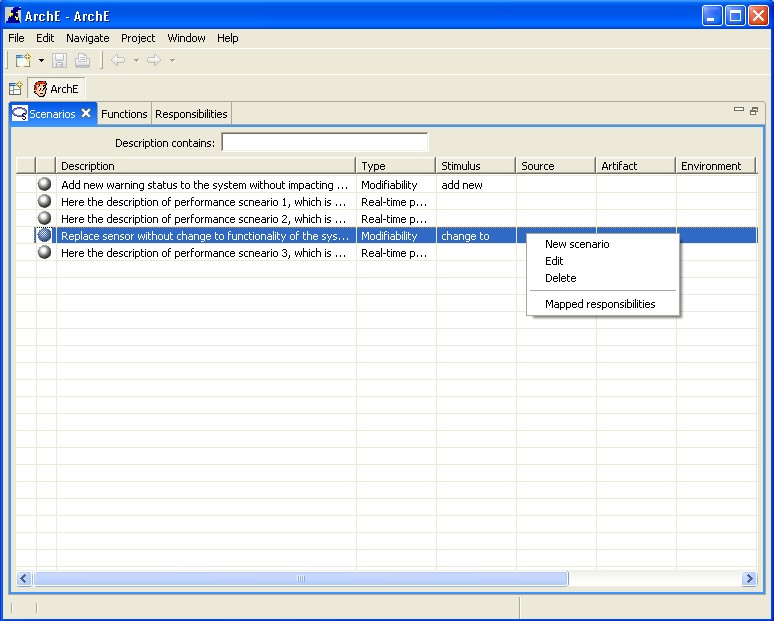
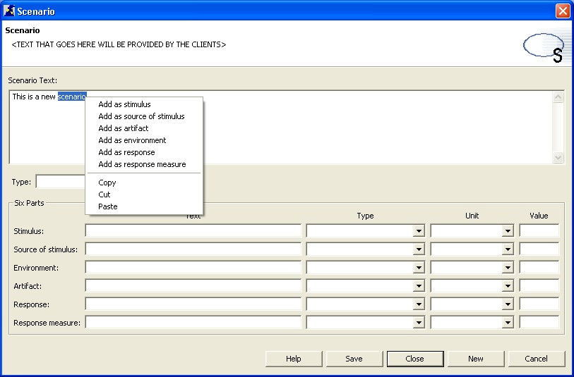
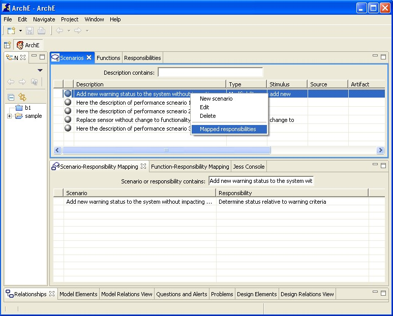

This tutorial will help you to understand the scenarios view and the related functionalities.
This scenario view displays the scenarios for an open project. In the second column of the view, the status of the scenario is displayed as icons. If the scenario has not been analyzed by the Core the status is represented as a "white ball" icon. If the scenario has been analyzed by the Core and is found to be satisifed for all available Reasoning Frameworks, the status is "satisfied" and is represented as a "green ball" icon. If the scenario is not satisfied for any one of the available Reasoning Frameworks the scenario status is "not statisfied" and is represented by a "red ball" icon.
Right click in the view and select New from the context menu options.

A dialog box for adding a new scenario should open up. The user can then type the text of the new scenario in the "Scenario Text" text box. The user can highlight a part of this scenario and right click to select the part of the scenario that the highlighted text should be created as. The user then selects the type of the scenario being created from the "Type" drop down list (Unknown is allowed as a valid scenario type). This selection populates the Text, Type, Unit and Value text boxes of each of the 6 scenario parts with the default values for the scenario type selected. The user can cancel the operation or close the dialog box. The user can directly go on to create a new scenario from the dialog box by clicking the New button. After inputting the values for the 6 scenario parts the user can click Save to commit the scenario to the fact base in the Core. The user can also click Help to view a tooltip that contains information about the scenario parts.

Select the scenario to be edited. Right click and select Edit from the context menu options.
A dialog box for editing the scenario should open up. The operations available in this dialog box are identical to the ones available when the new scenario dialog box opens up.
In the new and edit scenario dialog boxes, the user can ask the Arche Core to give insights about a scenario (irrespective of the state of construction of the scenario). By clicking the Insight button the Core processes the scenario and sometimes can make suggestions (changes) to the scenario. The dialog box reflects the suggestions (changes) made by the Core to the scenario and its parts.
Select the scenario to be edited. Right click and select Delete from the context menu options.
Select a scenario in the view. Right click and select Mapped responsibilities from the context menu options.
The Scenario-Responsibility Mapping View should open up with the selected scnario's description in the dynamic filter text box. The view will display the scenario-responsibility mappings that exist between scenarios and responsibilities (both) that contain the text of the selected scenario.

This tutorial briefly introduced you to all functionalities related to the ArchE Scenarios View.